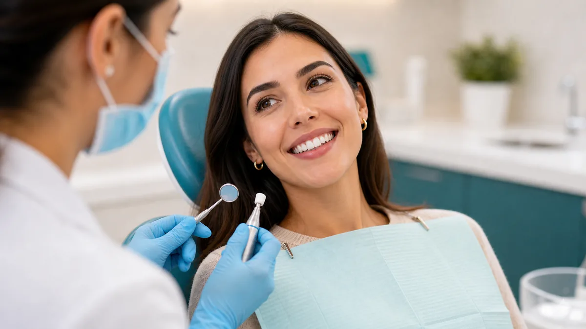

Mau hálito: causas comuns e como tratar
Na maioria dos casos, a origem está na boca. Placa, língua com saburra, gengivite, cáries e boca seca estão entre os fatores frequentes.

Principais causas
Higiene incompleta, acúmulo na língua, tártaro, inflamação gengival, próteses mal higienizadas e redução de saliva podem causar odor. Jejum prolongado, tabagismo e alguns alimentos também influenciam.
Enxaguante resolve?
Pode mascarar por pouco tempo, mas não substitui escovação, fio dental e limpeza da língua. Produtos com álcool podem piorar a secura em algumas pessoas.
Quando investigar?
Se o odor persistir mesmo com boa higiene, procure avaliação. Sangramento, gosto ruim, dor, dentes quebrados ou boca muito seca ajudam a direcionar o diagnóstico.
Como prevenir
Escove dentes e língua, use fio dental, beba água, evite tabaco e mantenha consultas periódicas. Próteses e aparelhos também precisam de limpeza específica.